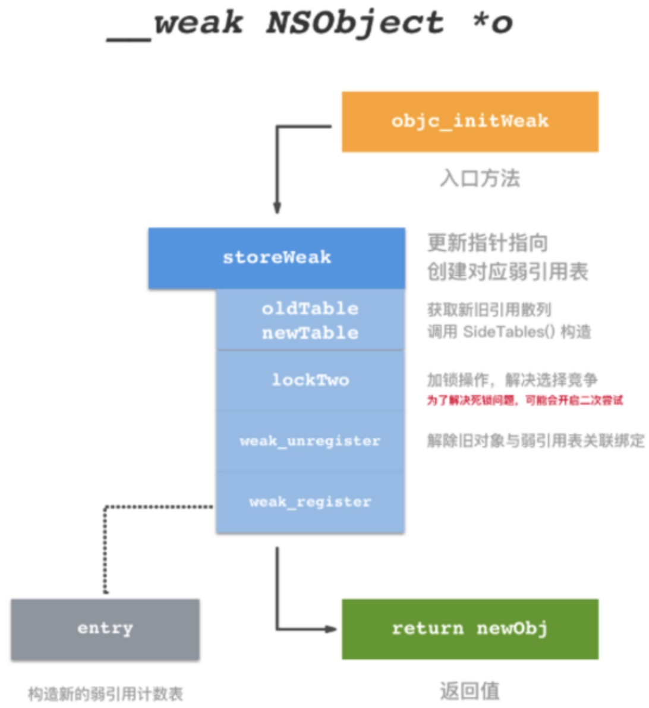
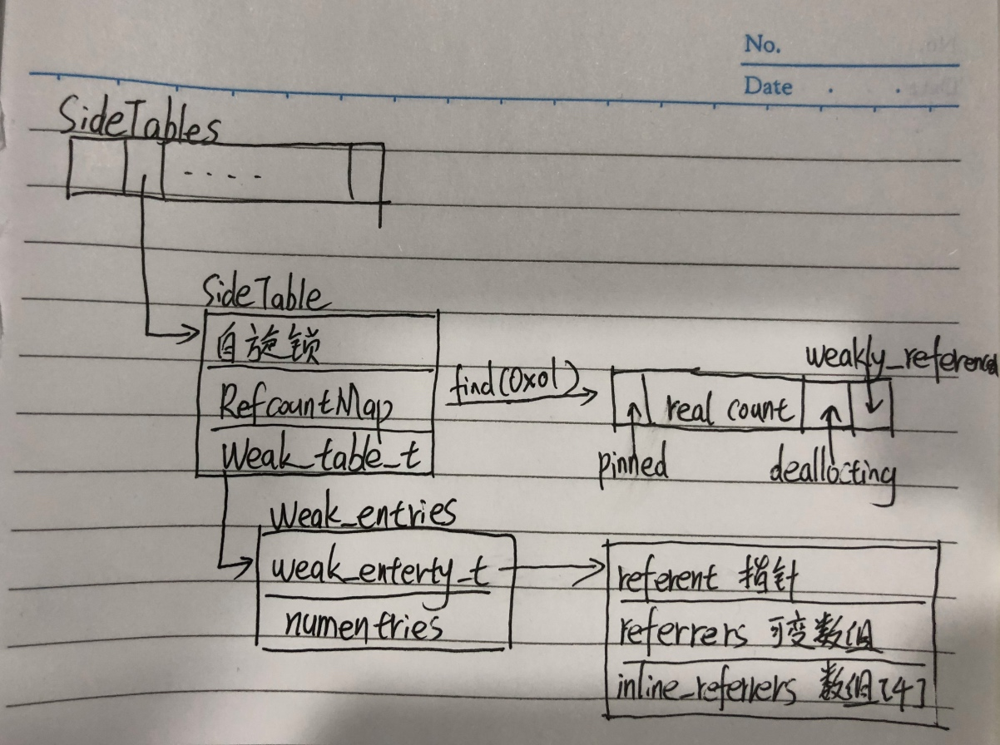
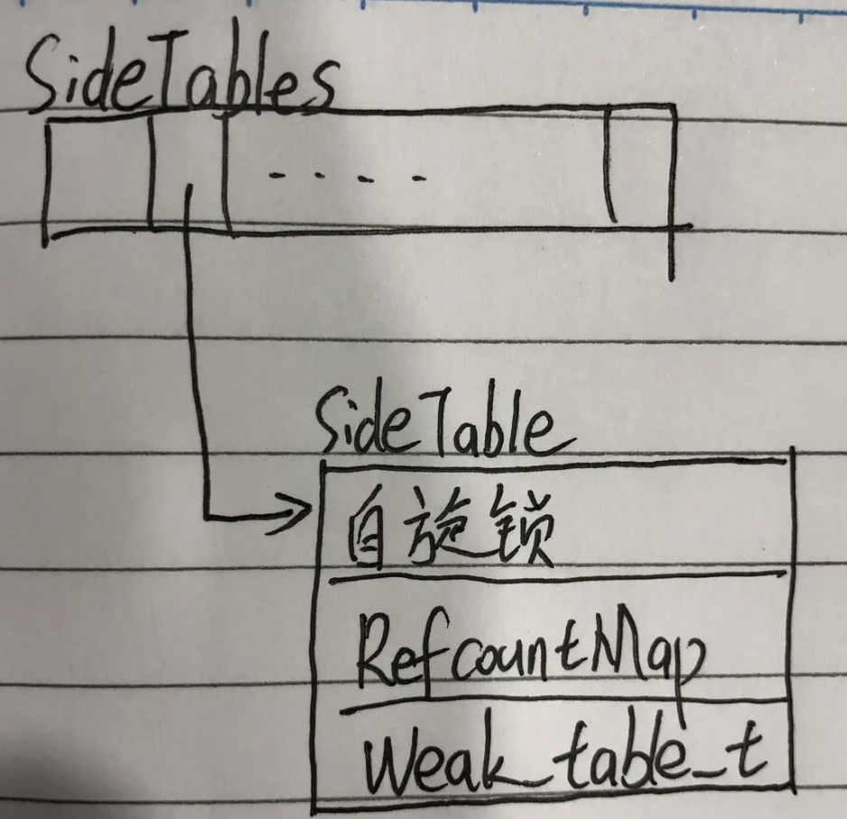
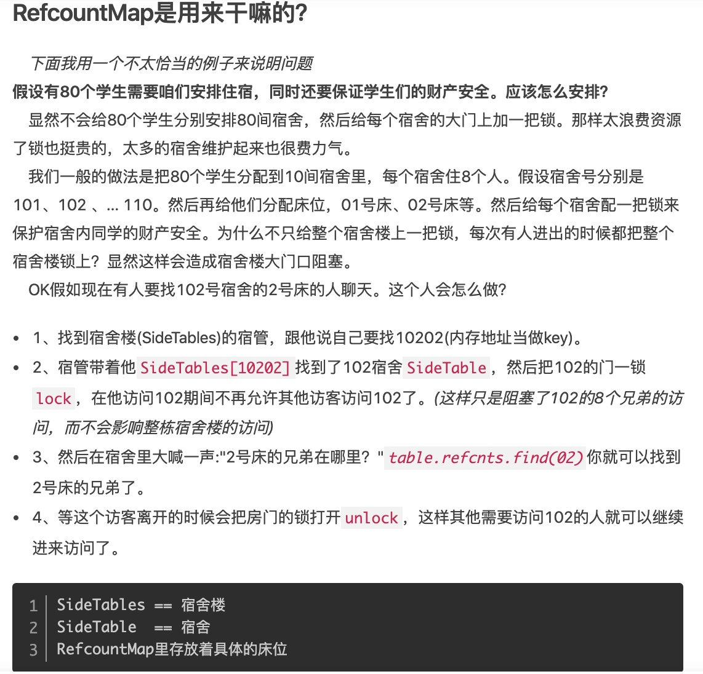
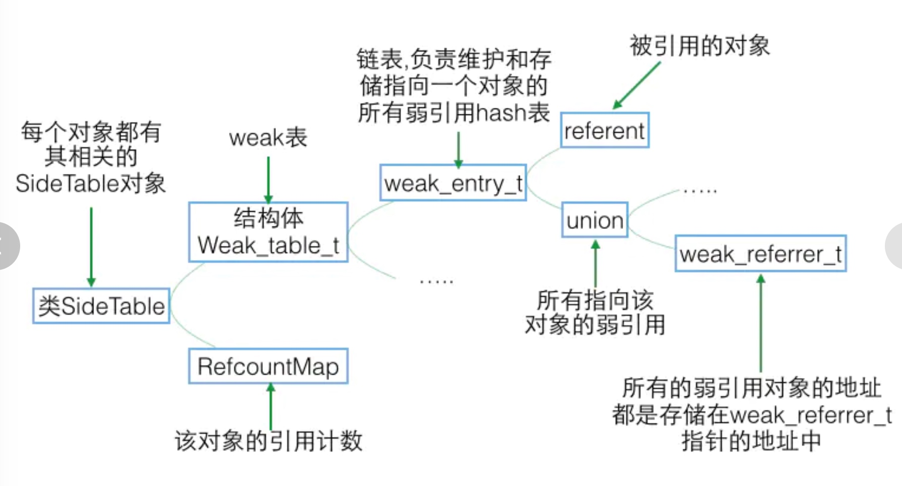

weak 的释放及原理
1.被weak修饰的对象在被释放的时候会发生什么？是如何实现的？知道sideTable么？里面的结构可以画出来么
在回答问题之前,我们先来了解一下 weak 的内部结构:
我们常说的 weak,其实是 runtime 维护的用于存储对象的所有 weak 指针的 hash 表,key 是对象的指针,value 是 weak 指针的地址(这个地址的值是所指对象的地址)数组
例如:
NSObject *b = [NSObject new];
__weak id a = b;
这里的 b 就是 weak 表的 key,&a(a的内存地址)就是 value;
weak 的实现原理简单的概括就三步:
- 初始化时:runtime 会调用objc_initWeak 函数,初始化一个新的 weak 指针指向对象的地址
- 添加引用时:objc_initWeak 函数会调用 objc_storeWeak()函数,objc_storeWeak()函数的作用是更新指针指向,创建对应的弱引用表
- 释放时:调用 clearDeallocating 函数.clearDeallocating函数首先根据对象地址获取所有 weak 指针地址的数组,然后遍历这个数组把其中的数据置为 nil,最后把这个 entry 从 weak 表中删除,最后清理对象的记录.
在 runtime 里,weak 修饰符变量是通过 objc_initWeak 函数来初始化的,在变量作用域结束的时候通过 objc_destroyWeak 函数来释放的.
这两个函数长这样:
id objc_initWeak(id *location, id newObj)
{
// 查看对象实例是否有效
// 无效对象直接导致指针释放
if (!newObj) {
*location = nil;
return nil;
}
// 这里传递了三个 bool 数值
// 使用 template 进行常量参数传递是为了优化性能
return storeWeak<false/*old*/, true/*new*/, true/*crash*/>
(location, (objc_object*)newObj);
}
void objc_destroyWeak(id *location)
{
(void)storeWeak<true/*old*/, false/*new*/, false/*crash*/>
(location, nil);
}
注意点:
- objc_initWeak 函数有一个前提条件,就是 object 必须是一个没有被注册为 weak 对象的有效指针,而 value 则可以是 null,或者指向一个有效的对象
- 添加引用时,object_initWeak 函数会调用 object_storeWeak()函数,object_storeWeak()函数的作用是更新指针指向,创建对应的弱引用表
从上面两个代码能看出来他们都调用了 storeWeak 这个函数,但是传入的参数确有点不一样
init 方法中,第一个参数为 weak 的修饰变量,第二个参数为引用计数对象,但是在 destoryWeak 函数,第一参数依旧为 weak 修饰变量,第二个为 nil.参数不同到底代表了什么?下面继续分析 storeWeak 这个函数:
// 更新一个弱引用变量
// 如果 HaveOld 是 true, 变量是个有效值，需要被及时清理。变量可以为 nil。
// 如果 HaveNew 是 true, 需要一个新的 value 来替换变量。变量可以为 nil
// 如果crashifdeallocation 是 ture ，那么如果 newObj 是 deallocating，或者 newObj 的类不支持弱引用，则该进程就会停止。
// 如果crashifdeallocation 是 false，那么 nil 会被存储。
template <bool HaveOld, bool HaveNew, bool CrashIfDeallocating>
static id storeWeak(id *location, objc_object *newObj)
{
assert(HaveOld || HaveNew);
if (!HaveNew) assert(newObj == nil);
Class previouslyInitializedClass = nil;
id oldObj;
// 创建新旧散列表
SideTable *oldTable;
SideTable *newTable;
// Acquire locks for old and new values.
// 获得新值和旧值的锁存位置 (用地址作为唯一标示)
// Order by lock address to prevent lock ordering problems.
// 通过地址来建立索引标志，防止桶重复
// Retry if the old value changes underneath us.
// 下面指向的操作会改变旧值
retry:
if (HaveOld) {
// 如果 HaveOld 为 true ，更改指针，获得以 oldObj 为索引所存储的值地址
oldObj = *location;
oldTable = &SideTables()[oldObj];
} else {
oldTable = nil;
}
if (HaveNew) {
// 获得以 newObj 为索引所存储的值对象
newTable = &SideTables()[newObj];
} else {
newTable = nil;
}
// 对两个 table 进行加锁操作，防止多线程中竞争冲突
SideTable::lockTwo<HaveOld, HaveNew>(oldTable, newTable);
// location 应该与 oldObj 保持一致，如果不同，说明当前的 location 已经处理过 oldObj 可是又被其他线程所修改, 保证线程安全，这个判断用来避免线程冲突重处理问题
if (HaveOld && *location != oldObj) {
SideTable::unlockTwo<HaveOld, HaveNew>(oldTable, newTable);
goto retry;
}
// Prevent a deadlock between the weak reference machinery
// and the +initialize machinery by ensuring that no
// weakly-referenced object has an un-+initialized isa.
// 防止弱引用之间发生死锁，并且通过 +initialize 初始化构造器保证所有弱引用的 isa 非空指向
if (HaveNew && newObj) {
// 获得新对象的 isa 指针
Class cls = newObj->getIsa();
// 判断 isa 非空且已经初始化
if (cls != previouslyInitializedClass &&
!((objc_class *)cls)->isInitialized())
{
// 对两个表解锁
SideTable::unlockTwo<HaveOld, HaveNew>(oldTable, newTable);
_class_initialize(_class_getNonMetaClass(cls, (id)newObj));
// If this class is finished with +initialize then we're good.
// If this class is still running +initialize on this thread
// (i.e. +initialize called storeWeak on an instance of itself)
// then we may proceed but it will appear initializing and
// not yet initialized to the check above.
// Instead set previouslyInitializedClass to recognize it on retry.
// 如果该类已经完成执行 +initialize 方法是最好的，如果该类 + initialize 在线程中，例如 +initialize 正在调用storeWeak 方法，那么则需要手动对其增加保护策略，并设置 previouslyInitializedClass 指针进行标记然后重新尝试
previouslyInitializedClass = cls;
goto retry;
}
}
// Clean up old value, if any. 清除旧值
if (HaveOld) {
weak_unregister_no_lock(&oldTable->weak_table, oldObj, location);
}
// Assign new value, if any. 分配新值
if (HaveNew) {
newObj = (objc_object *)weak_register_no_lock(&newTable->weak_table,
(id)newObj, location,
CrashIfDeallocating);
// weak_register_no_lock returns nil if weak store should be rejected
// 如果弱引用被释放则该方法返回 nil
// Set is-weakly-referenced bit in refcount table.
// 在引用计数表中设置弱引用标记位
if (newObj && !newObj->isTaggedPointer()) {
newObj->setWeaklyReferenced_nolock();
}
// Do not set *location anywhere else. That would introduce a race.
*location = (id)newObj;
}
else {
// No new value. The storage is not changed.
}
SideTable::unlockTwo<HaveOld, HaveNew>(oldTable, newTable);
return (id)newObj;
}
以上就是 storeWeak 函数的实现,他做了几件事:
- 声明了新旧散列表指针,因为 weak 修饰的变量如果之前已经指向一个对象,然后其再次改变指向另一个对象,那么按理来说我们需要从 oldTable 删除 weak 变量的记录,也就是要释放该 weak 变量,然后再给 newTable 添加新记录(weak变量),这里的新旧散列表就是这个作用
- 根据新旧变量地址获取响应的 SideTable
- 对两个表进行加锁操作,防止多线程竞争冲突
- 进行线程冲突重处理判断
- 判断其 isa 指针是否为空,为空则需要初始化
- 如果存在旧值,调用 weak_unregister_no_lock 函数清楚旧值
- 调用weak_register_no_lock 函数分配新值
- 解锁两个表,返回第二参数
tip:
你可以把objc_storeWeak(id *location, objc_object *newObj)理解为：objc_storeWeak(value, key)，并且当key变nil，将value置nil。
结合最开始的例子我们可以理解为objc_storeWeak(&a, b)
在b非nil时，a和b指向同一个内存地址，在b变nil时，a变nil。此时向a发送消息不会崩溃：在Objective-C中向nil发送消息是安全的。
而如果a是由 assign 修饰的，则： 在 b 非 nil 时，a 和 b 指向同一个内存地址，在 b 变 nil 时，a 还是指向该内存地址，变野指针。此时向 a 发送消息极易崩溃,不是一定会奔溃,涉及到 assgin 的释放问题下面再说。
初始化弱引用对象流程图:

数据结构分析(* SideTables、RefcountMap、weak_table_t*)

SideTable
SideTable主要用于管理对象的引用计数和 weak 表为了管理所有对象的引用计数和 weak 指针,苹果创建了一个全局的 SideTables,是一个全局的 Hash 表,里面装的都是 SideTable结构体.他使用对象的内存地址当他的key.
struct SideTable {
// 保证原子操作的自旋锁
spinlock_t slock;
// 引用计数的 hash 表
RefcountMap refcnts;
// weak 引用全局 hash 表
weak_table_t weak_table;
}

从声明中可以看出,SideTable内部包含了一个是防止多线程竞争的自旋锁(slock),第二个是协助对象的 isa 指针的 extra_rc 共同引用计数变量,这里主要看 weak_table_t 的结构和作用
1,一把自旋锁。spinlock_t slock;
自旋锁比较适用于锁使用者保持锁时间比较短的情况。正是由于自旋锁使用者一般保持锁时间非常短，因此选择自旋而不是睡眠是非常必要的，自旋锁的效率远高于互斥锁。信号量和读写信号量适合于保持时间较长的情况，它们会导致调用者睡眠，因此只能在进程上下文使用，而自旋锁适合于保持时间非常短的情况，它可以在任何上下文使用。
2,引用计数器 RefcountMap refcnts;
对象的具体引用计数数量是记录在这里的
这里的RefcountMap其实是个 C++的 Map.

weak_table_t
weak_table_t结构体存储了某个对象相关的所有弱引用信息
/**
* The global weak references table. Stores object ids as keys,
* and weak_entry_t structs as their values.
*/
struct weak_table_t {
// 保存了所有指向指定对象的 weak 指针
weak_entry_t *weak_entries;
// 存储空间
size_t num_entries;
// 参与判断引用计数辅助量
uintptr_t mask;
// hash key 最大偏移值
uintptr_t max_hash_displacement;
};
使用 weak 指针指向的对象地址作为 key,用 weak_entry_t 类型结构体对象作为 value.其中的 weak_entries 成员,就是弱引用表入口;
weak_entry_t
weak_entry_t负责维护和存储指向一个对象的所有弱引用 hash 表:
typedef objc_object ** weak_referrer_t;
struct weak_entry_t {
DisguisedPtrobjc_object> referent;
union {
struct {
weak_referrer_t *referrers;
uintptr_t out_of_line : 1;
uintptr_t num_refs : PTR_MINUS_1;
uintptr_t mask;
uintptr_t max_hash_displacement;
};
struct {// out_of_line=0 is LSB of one of these (don't care which)
weak_referrer_t inline_referrers[WEAK_INLINE_COUNT];
};
}
}
- referent:被值对象的地址,前面循环遍历查找的时候就是判断目标地址是否和他相等
- referrers:可变数组,里面保存着所指向这个对象的弱引用的地址,当这个对象被释放的时候.referrers里面的所有指针都会被置为 nil
- inline_referrers:只有 4 个元素的数组,默认情况下,用它来存储弱引用的指针,当大于 4 个的时候使用referrers来存储指针
用一张图来表示就是: 
weak_unregister_no_lock
下面来看一下weak_unregister_no_lock是怎么清除旧值的
void weak_unregister_no_lock(weak_table_t *weak_table, id referent_id,
id *referrer_id)
{
objc_object *referent = (objc_object *)referent_id;
objc_object **referrer = (objc_object **)referrer_id;
weak_entry_t *entry;
if (!referent) return;
if ((entry = weak_entry_for_referent(weak_table, referent))) {
remove_referrer(entry, referrer);
bool empty = true;
if (entry->out_of_line && entry->num_refs != 0) {
empty = false;
}
else {
for (size_t i = 0; i < WEAK_INLINE_COUNT; i++) {
if (entry->inline_referrers[i]) {
empty = false;
break;
}
}
}
if (empty) {
weak_entry_remove(weak_table, entry);
}
}
// Do not set *referrer = nil. objc_storeWeak() requires that the
// value not change.
}
该方法主要作用是将旧对象在 weak_table 中解除 weak 指针的对应绑定,根据函数名称,我们称他为解除注册操作
这个函数的逻辑:首先是 weak_table_t 表,键和值.声明 weak_entry_t 变量,如果 key(referent)为空,直接返回,根据全局入口表和键获取对应的 weak_entry_t 对象entry.获取到 entry 后,将 entry 以及 weak_table 作为参数传入 remove_referrer 函数中,这个函数就是解除操作,然后判断 entry 是否为空,若果为空,从全局记录表中清除相应的 entry.
weak_entry_for_referent
static weak_entry_t *weak_entry_for_referent(weak_table_t *weak_table, objc_object *referent)
{
assert(referent);
weak_entry_t *weak_entries = weak_table->weak_entries;
if (!weak_entries) return nil;
size_t index = hash_pointer(referent) & weak_table->mask;
size_t hash_displacement = 0;
while (weak_table->weak_entries[index].referent != referent) {
index = (index+1) & weak_table->mask;
hash_displacement++;
if (hash_displacement > weak_table->max_hash_displacement) {
return nil;
}
}
return &weak_table->weak_entries[index];
}
这个函数的逻辑就是先获取全局 weak 表入口,然后将引用计数的地址进行 hash 化后与 weak_table->mask 做与操作,作为下标,在全局 weak 表中查找,若找到,返回 entry,若没有,返回 nil
参考:
https://www.jianshu.com/p/10c0f49f4755
https://www.jianshu.com/p/ef6d9bf8fe59
https://www.jianshu.com/p/8577286af88e
https://juejin.im/entry/58a178060ce463005644ee4a
Copyright © 2015 Powered by MWeb, Theme used GitHub CSS.